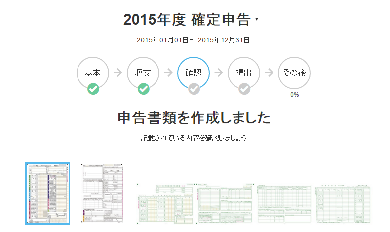

今年も無事（？）、確定申告が終わりました。
公開日：

今年も 全自動のクラウド会計ソフト freee で確定申告を済ませました。最近デブってきているので、松山税務署まで散歩がてら歩いていき、順番待ちの列を尻目に、印刷した書類をお姉さんにポンと手渡ししておしまい。待ってる人たちからお金とって、登録を代行してあげたらいい商売になるなぁ、などと思いながら、家路につきました。あ、よく考えたらそれは税理士さんか誰かの仕事ですな。
さて、今年は freee を使った2度目の確定申告でしたが……なんだか去年よりも使いやすくなってる？ 質問に ○ × で答えながら、必要な情報はインラインで書き加えていくだけで終わってしまいました。
そのほかにも、確定申告の書類を作るとき、家賃の計算に電卓を引っ張り出すハメになったり。どうせならこういうところも自動計算しておいてほしいし、もしそういう機能がすでにあるなら、それとわかるナビゲーションがほしいかな。
このあたりの不満が解消された感じだね。そういえば、今年は電卓を使わなかったし、ブラウザーのタブも一枚で済んだような？
あと、今年はなるべく支払いをジャパンネット銀行の Visa デビッドで済まし、記帳を簡単にしてみました。
Visa デビッドの口座を作り、その支払いは自動仕分けでジャパンネット銀行 → Visa デビッド口座への資金移動に。Visa デビッド口座は利用履歴がジャパンネット銀行から自動で取り込めるので、ポチポチと仕訳していくだけですね。その仕分け処理もフィルターを作成し、できるだけ仕訳を自動化してみました。おかげで、現金の記帳が減らせたヤッホイ！ 去年は丸一日かけて書類を作っていた気がしましたが、今回は実質半日ぐらいで終わったような気がします。100均で買ったスティックのりがぜんぜん貼り付かず、台紙に控除の書類がうまく貼れないのが最大の難関だったぐらい。
かなりゴキゲンになったので、ほかにもたくさんフィルターを作成。日頃の支払いも、できるだけ自動記帳が可能なカードに移したので、来年はもっと楽になるんじゃないかと思います。